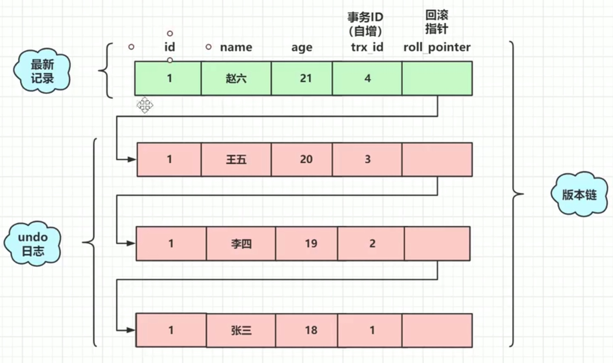
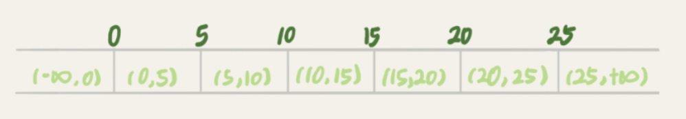

MVCC（多版本并发控制）
能够在不加锁的情况下，实现读已提交和可重复读隔离级别，主要针对的是快照读（当前读是悲观锁的一种）
- 快照读：MVCC 的 select 读取的是快照中的数据，不加锁；（也可以通过 for updat 或 lock in share mode 实现加 X S 锁成为当前读）
- 当前读：MVCC 的 insert、update、delete 读取的是最新的数据，需要加锁。
undo log & 版本链 & readview
- 持久性通过
redo log实现 - 原子性通过
undo log实现 - 隔离性通过
MVCC + 锁实现
数据表有一个隐藏的列 trx_id 记录更改它的事务id（自增）；还有一个回滚指针指向上一个快照。
数据库 undo log 就记录着这一行数据的历史版本以及修改每个版本的事务id

readview 是一个含有 4 个属性的对象，在生成的时候，会记录当前版本链的一些信息：
m_ids：当前活跃的（未提交）的事务 id 列表min_trx_id：m_ids的最小值max_trx_id：生成 readview 时下一个事务应该分配的 idcreator_trx_id：生成 readview 的事务 id
max_trx_id 并不是 m_ids 中的最大值，事务 id 是递增分配的。假如 1，2，3 这三个事务，之后3 事务提交了。那么一个新的读事务在生成 ReadView 时，m_ids 就包括 1 和 2，min_trx_id 的值就是 1，max_trx_id 的值就是 4。
只有在对表中的记录做改动时（INSERT、DELETE、UPDATE）才会为事务分配事务 id，否则在一个只读事务中的事务 id 值都默认为0。
快照读时选择哪一个版本？
当 select 时，会生成 readview，然后根据四个属性从 undo log 依次来查找第一个可读的版本：
trx_id==creator_trx_id: 说明更改这个版本的事务就是当前查询的事务，可以访问trx_id<min_trx_id: 说明更改这个版本的事务已经不活跃了（已提交），可以访问min_trx_id<=trx_id<=max_trx_id:trx_idinm_ids: 说明更改这个版本的事务还未提交，不可以访问trx_idnot inm_ids: 说明更改这个版本的事务已经提交了，可以访问
trx_id>max_trx_id: 说明更改这个版本的事务是在当前查询的事务之后开启的，不可以访问
使用 MVCC 实现隔离级别
实现可提交读（解决脏读）
因为没有提交的事务都在 readview 里面记录着，所以无法读取未提交的事务，保证了可提交读；
生成 readview 的时机是每次 select 快照读的时候，所以存在同一个事务里两次 select 生成两个不同的 readview，造成了不可重复读
实现可重复读（解决不可重复读）
把生成 readview 的时机改成启动事务时，整个事务只有一个 readview，保证了同一个事务读取到的版本是相同的。
由于 MVCC 的版本链是行级别的，所以无法解决幻读。
间隙锁（解决幻读）
Mysql 的 InnoDB 通过使用 Next-key Locks 解决幻读：一个事务通过索引查找到一个范围后，就锁住这个索引（Record Locks）以及索引之间的间隙（Gap Locks），这样其他事物就不能往这个范围插入数据了。
Next-key Locks 锁定的是一个前开后闭的区间，查找过程中只有访问到的数据才加锁。

例如上图的可能的加锁区间是：
(-inf, 0]、(-inf, 0]、(0, 5]、(5, 10]、(10, 15]、(15, 25]、(25, inf]
使用三级封锁实现隔离级别
除了 MVCC + Next-key Locks，还可以使用三级封锁实现隔离级别
- 修改时加 X 锁，直到事务结束（解决丢失修改）
- 读取时加 S 锁，读取完立即释放（解决一个事务修改时，另一个事务还能读导致的读脏数据，但是一个事务有多次读时，读完一次释放了锁，中间可能有其他事务获取 X 锁进行修改）
- 读取时加 S 锁，直到事务结束（解决一个事务有多次读时，中间有其他事务进行修改导致的不可重复读）